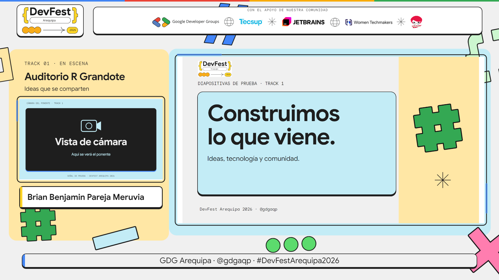
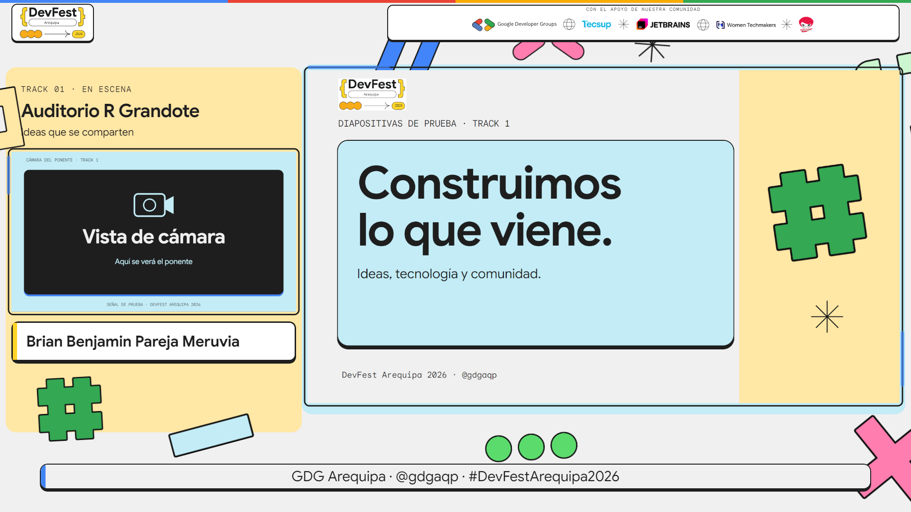
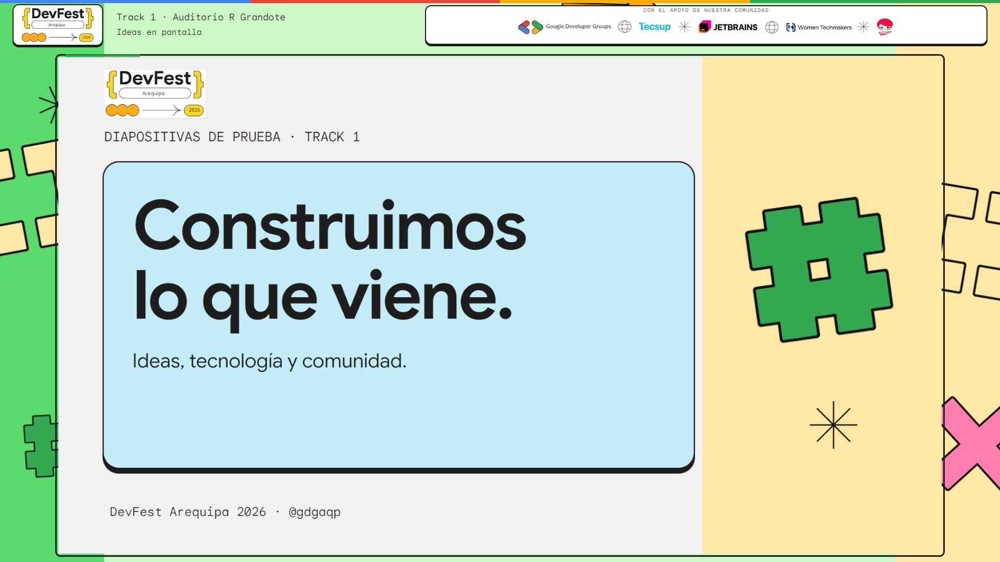
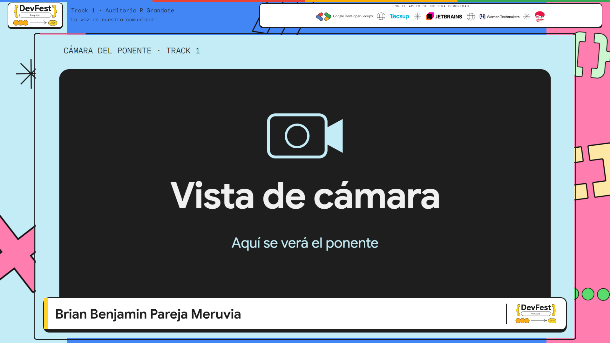

Más espacio para la cámara y las diapositivas
Las cinco marcas siguen visibles en una cabecera más discreta. Las ventanas conservan la proporción 16:9.
Antes
Ahora: cámara y diapositivas ampliadas
Vista individual de diapositivas
Vista individual de cámara
Ver todas las escenas · Panel de control